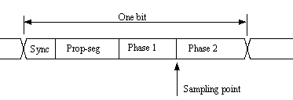

| FreescaleCAN | |
|
|

Component
FreescaleCAN
CAN communication for Freescale implementation
Component Level: High
Category:
CPU Internal Peripherals-Communication
This component provides services for
serial communication using the CAN
2.0 A and B protocol developed by Robert Bosch 1991 standard ISO 11868.
These services are corresponding to a data link layer in ISO/OSI Network model and are designed for "fullCAN" chips. Generally there are independent message buffers which can be configured for standard or extended frames and also can have different acceptance codes for message filtering. Each message buffer is used both as transmit and receive buffer.
The length of segments that can be set in the timing group of the component properties.
These services are corresponding to a data link layer in ISO/OSI Network model and are designed for "fullCAN" chips. Generally there are independent message buffers which can be configured for standard or extended frames and also can have different acceptance codes for message filtering. Each message buffer is used both as transmit and receive buffer.
Guidelines for using this component:
1. Set important properties in the inspector window (communication
baud rate, etc...)
2. The operation of the component is started by the Enable method.
3. Data frames and remote frames are sent by the SendFrame method.
4. The communication is stopped by the Disable method. It is necessary to disable the communication
before switching to a power saving mode.
Timing segments
- the Synchronization Segment
- the Propagation Segment
- the Phase Segment 1
- the Phase Segment 2
|  |
The length of segments that can be set in the timing group of the component properties.
Version specific information for HCS12(X) derivatives:
When using interrupts (Interupt service/events property enabled), it is recommended to receive data (ReadFrame method) in OnFullRxBuffer event. Otherwise a new incomming message will overwrite the received message and OnOverrun event will be invoked. The OnOverrun event is also invoked when all hardware buffers of the CAN module are filled before the system can service the receive interrupt (e.g. in a case when another interrupt with highr priority is being serviced).
When using interrupts (Interupt service/events property enabled), it is recommended to receive data (ReadFrame method) in OnFullRxBuffer event. Otherwise a new incomming message will overwrite the received message and OnOverrun event will be invoked. The OnOverrun event is also invoked when all hardware buffers of the CAN module are filled before the system can service the receive interrupt (e.g. in a case when another interrupt with highr priority is being serviced).